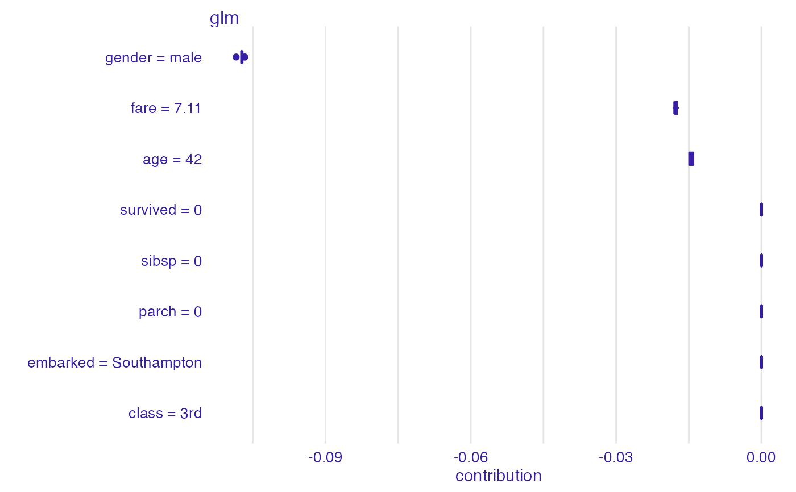
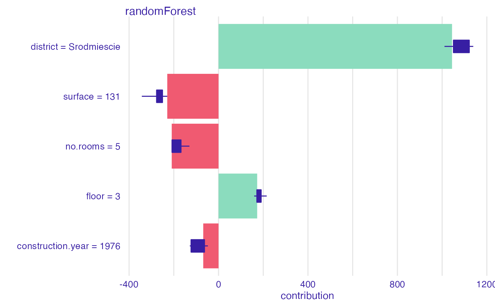
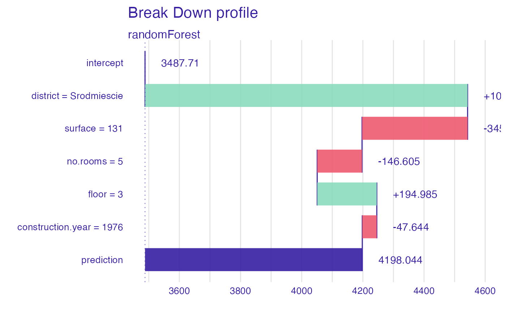
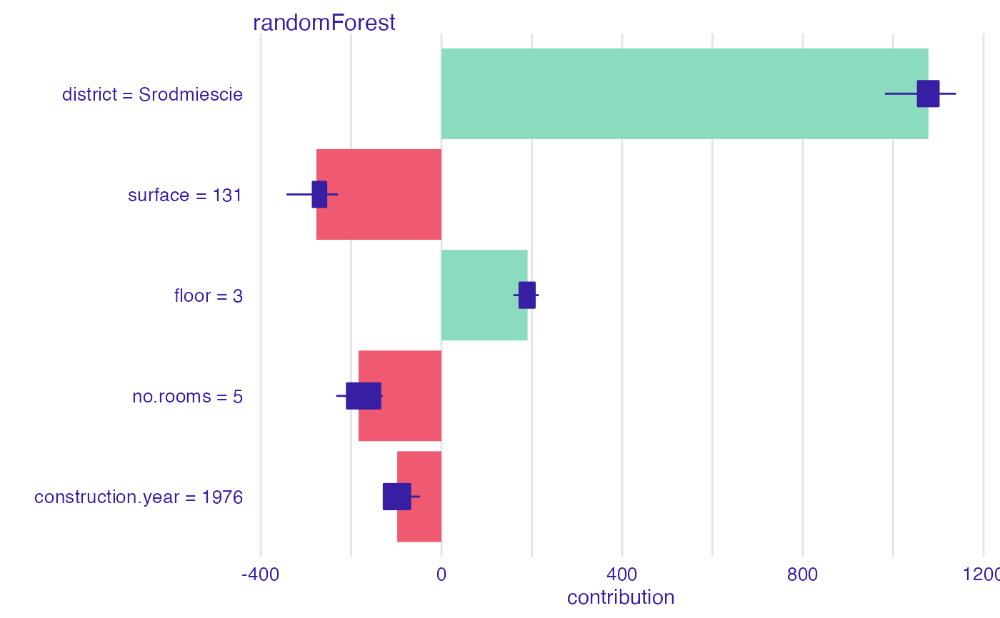

Explanation Level Uncertainty of Sequential Variable Attribution
Source:R/break_down_uncertainty.R
break_down_uncertainty.RdThis function calculates the break down algorithm for B random orderings.
Then it calculates the distribution of attributions for these different orderings.
Note that the shap() function is just a simplified interface to the break_down_uncertainty() function
with a default value set to B=25.
break_down_uncertainty(x, ..., keep_distributions = TRUE, B = 10) # S3 method for explainer break_down_uncertainty( x, new_observation, ..., keep_distributions = TRUE, B = 10 ) # S3 method for default break_down_uncertainty( x, data, predict_function = predict, new_observation, label = class(x)[1], ..., path = NULL, keep_distributions = TRUE, B = 10 ) shap(x, ..., B = 25)
Arguments
| x | an explainer created with function |
|---|---|
| ... | other parameters. |
| keep_distributions | if |
| B | number of random paths |
| new_observation | a new observation with columns that correspond to variables used in the model. |
| data | validation dataset, will be extracted from |
| predict_function | predict function, will be extracted from |
| label | name of the model. By default it's extracted from the 'class' attribute of the model. |
| path | if specified, then this path will be highlighed on the plot. Use |
Value
an object of the break_down_uncertainty class.
References
Explanatory Model Analysis. Explore, Explain and Examine Predictive Models. https://pbiecek.github.io/ema
See also
Examples
library("DALEX") library("iBreakDown") set.seed(1313) model_titanic_glm <- glm(survived ~ gender + age + fare, data = titanic_imputed, family = "binomial") explain_titanic_glm <- explain(model_titanic_glm, data = titanic_imputed, y = titanic_imputed$survived, label = "glm")#> Preparation of a new explainer is initiated #> -> model label : glm #> -> data : 2207 rows 8 cols #> -> target variable : 2207 values #> -> predict function : yhat.glm will be used ( default ) #> -> predicted values : numerical, min = 0.1490412 , mean = 0.3221568 , max = 0.9878987 #> -> model_info : package stats , ver. 4.0.2 , task classification ( default ) #> -> residual function : difference between y and yhat ( default ) #> -> residuals : numerical, min = -0.8898433 , mean = 4.198546e-13 , max = 0.8448637 #> A new explainer has been created!# there is no explanation level uncertanity linked with additive models bd_glm <- break_down_uncertainty(explain_titanic_glm, titanic_imputed[1, ]) bd_glm#> min q1 median mean #> glm: age = 42 -0.01492541 -0.01492541 -0.01434645 -0.01446344 #> glm: class = 3rd 0.00000000 0.00000000 0.00000000 0.00000000 #> glm: embarked = Southampton 0.00000000 0.00000000 0.00000000 0.00000000 #> glm: fare = 7.11 -0.01823177 -0.01784977 -0.01784977 -0.01773120 #> glm: gender = male -0.10843751 -0.10725651 -0.10725651 -0.10725810 #> glm: parch = 0 0.00000000 0.00000000 0.00000000 0.00000000 #> glm: sibsp = 0 0.00000000 0.00000000 0.00000000 0.00000000 #> glm: survived = 0 0.00000000 0.00000000 0.00000000 0.00000000 #> q3 max #> glm: age = 42 -0.01405996 -0.01396446 #> glm: class = 3rd 0.00000000 0.00000000 #> glm: embarked = Southampton 0.00000000 0.00000000 #> glm: fare = 7.11 -0.01741824 -0.01705077 #> glm: gender = male -0.10725293 -0.10667755 #> glm: parch = 0 0.00000000 0.00000000 #> glm: sibsp = 0 0.00000000 0.00000000 #> glm: survived = 0 0.00000000 0.00000000plot(bd_glm)# \dontrun{ ## Not run: library("randomForest") set.seed(1313) model <- randomForest(status ~ . , data = HR) new_observation <- HR_test[1,] explainer_rf <- explain(model, data = HR[1:1000, 1:5])#> Preparation of a new explainer is initiated #> -> model label : randomForest ( default ) #> -> data : 1000 rows 5 cols #> -> target variable : not specified! ( WARNING ) #> -> predict function : yhat.randomForest will be used ( default ) #> -> predicted values : predict function returns multiple columns: 3 ( WARNING ) some of functionalities may not work #> -> model_info : package randomForest , ver. 4.6.14 , task multiclass ( default ) #> -> residual function : difference between 1 and probability of true class ( default ) #> A new explainer has been created!bd_rf <- break_down_uncertainty(explainer_rf, new_observation) bd_rf#> min q1 median mean #> randomForest.fired: age = 57.73 -0.021328 0.0247710 0.253395 0.1946016 #> randomForest.fired: evaluation = 2 -0.018856 0.0073270 0.032725 0.0216108 #> randomForest.fired: gender = male -0.009380 0.0054740 0.019250 0.0911182 #> randomForest.fired: hours = 42.32 0.167650 0.1953890 0.220689 0.2461712 #> randomForest.fired: salary = 2 -0.270298 -0.1751675 -0.160058 -0.1610878 #> randomForest.ok: age = 57.73 -0.346842 -0.3468420 -0.199269 -0.1834688 #> randomForest.ok: evaluation = 2 0.028666 0.1002960 0.125760 0.1215018 #> randomForest.ok: gender = male -0.282642 -0.1062540 -0.021756 -0.0845928 #> randomForest.ok: hours = 42.32 -0.106876 -0.0970580 -0.046824 -0.0447352 #> randomForest.ok: salary = 2 0.046824 0.1184785 0.118552 0.1311450 #> randomForest.promoted: age = 57.73 -0.126732 -0.0061320 -0.006132 -0.0111328 #> randomForest.promoted: evaluation = 2 -0.201822 -0.1749640 -0.166262 -0.1431126 #> randomForest.promoted: gender = male -0.045880 -0.0019940 -0.000019 -0.0065254 #> randomForest.promoted: hours = 42.32 -0.247972 -0.2398625 -0.189205 -0.2014360 #> randomForest.promoted: salary = 2 -0.003902 0.0069900 0.034329 0.0299428 #> q3 max #> randomForest.fired: age = 57.73 0.3529740 0.362800 #> randomForest.fired: evaluation = 2 0.0418870 0.045408 #> randomForest.fired: gender = male 0.1521340 0.280686 #> randomForest.fired: hours = 42.32 0.3072255 0.351330 #> randomForest.fired: salary = 2 -0.1390850 -0.070866 #> randomForest.ok: age = 57.73 -0.0178415 0.005860 #> randomForest.ok: evaluation = 2 0.1307830 0.196252 #> randomForest.ok: gender = male -0.0061560 -0.003480 #> randomForest.ok: hours = 42.32 0.0010015 0.030996 #> randomForest.ok: salary = 2 0.1542220 0.268992 #> randomForest.promoted: age = 57.73 0.0129425 0.015468 #> randomForest.promoted: evaluation = 2 -0.0957510 -0.058120 #> randomForest.promoted: gender = male 0.0023685 0.023564 #> randomForest.promoted: hours = 42.32 -0.1719955 -0.156930 #> randomForest.promoted: salary = 2 0.0415060 0.077562plot(bd_rf)# example for regression - apartment prices # here we do not have intreactions model <- randomForest(m2.price ~ . , data = apartments) explainer_rf <- explain(model, data = apartments_test[1:1000, 2:6], y = apartments_test$m2.price[1:1000])#> Preparation of a new explainer is initiated #> -> model label : randomForest ( default ) #> -> data : 1000 rows 5 cols #> -> target variable : 1000 values #> -> predict function : yhat.randomForest will be used ( default ) #> -> predicted values : numerical, min = 2052.033 , mean = 3487.71 , max = 5776.623 #> -> model_info : package randomForest , ver. 4.6.14 , task regression ( default ) #> -> residual function : difference between y and yhat ( default ) #> -> residuals : numerical, min = -632.8469 , mean = 1.070017 , max = 1328.352 #> A new explainer has been created!bd_rf <- break_down_uncertainty(explainer_rf, apartments_test[1,]) bd_rf#> min q1 median #> randomForest: construction.year = 1976 -128.5908 -119.3910 -75.48837 #> randomForest: district = Srodmiescie 981.8193 1036.9753 1054.79081 #> randomForest: floor = 3 178.8471 189.5230 194.12751 #> randomForest: no.rooms = 5 -229.8610 -225.7194 -212.31243 #> randomForest: surface = 131 -272.2211 -266.0785 -250.70512 #> mean q3 max #> randomForest: construction.year = 1976 -82.87975 -50.06424 -47.64365 #> randomForest: district = Srodmiescie 1046.73182 1054.79081 1091.59037 #> randomForest: floor = 3 197.65920 210.33113 215.52532 #> randomForest: no.rooms = 5 -200.17988 -203.34626 -130.21186 #> randomForest: surface = 131 -250.99715 -234.39585 -229.21426plot(bd_rf)bd_rf <- break_down_uncertainty(explainer_rf, apartments_test[1,], path = c("floor", "no.rooms", "district", "construction.year", "surface")) plot(bd_rf)# }